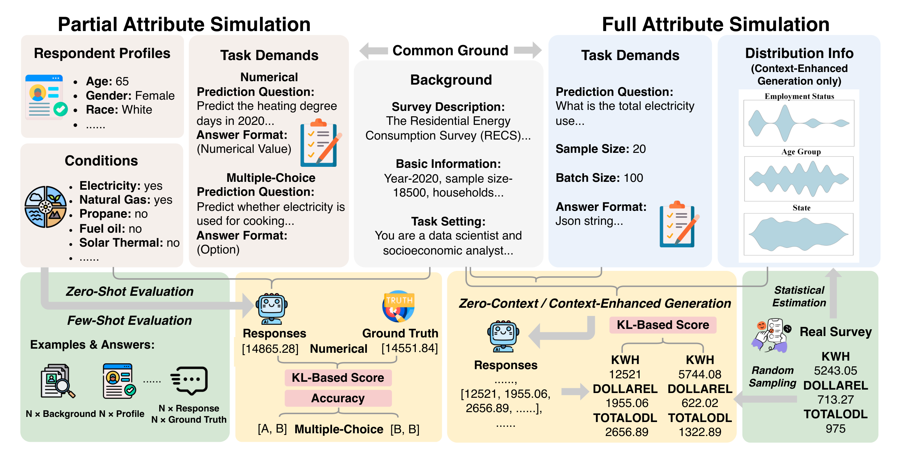
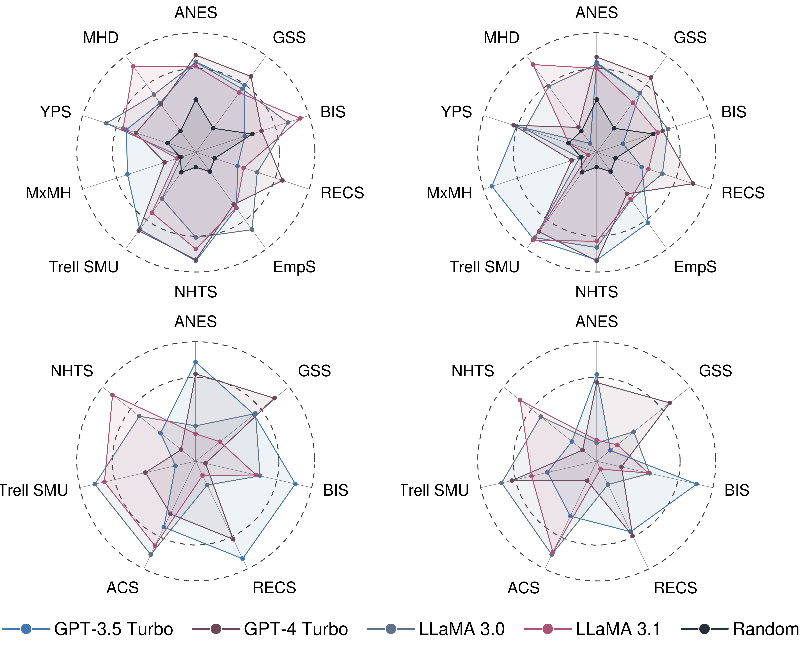
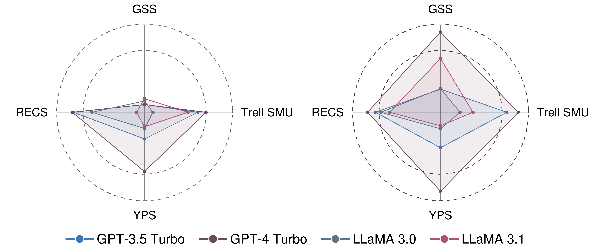
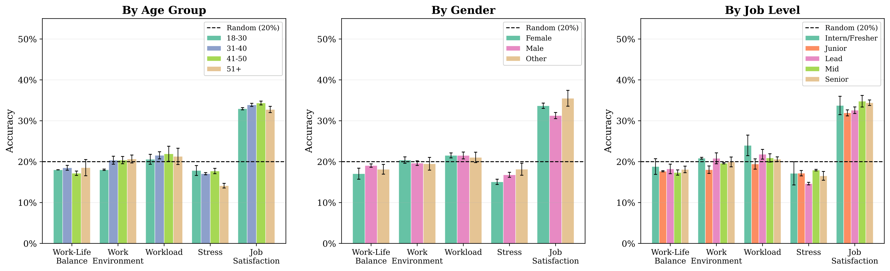
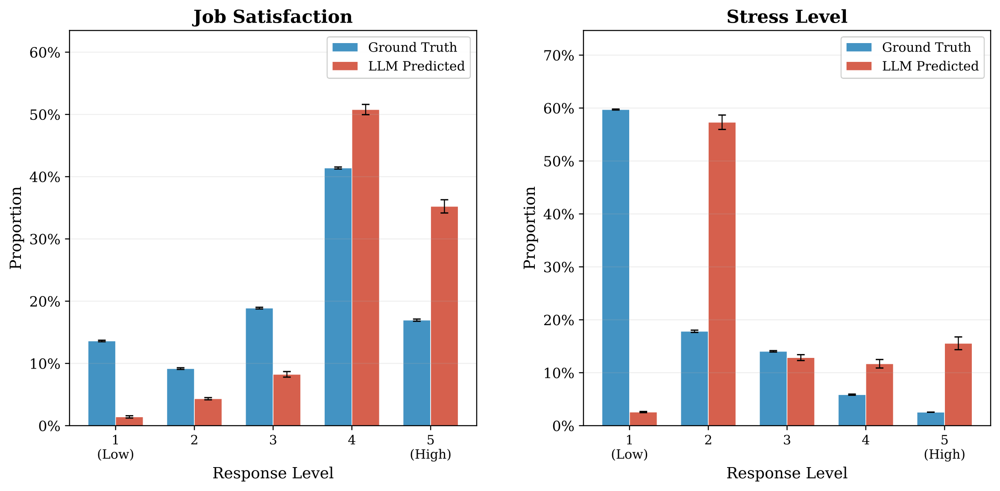
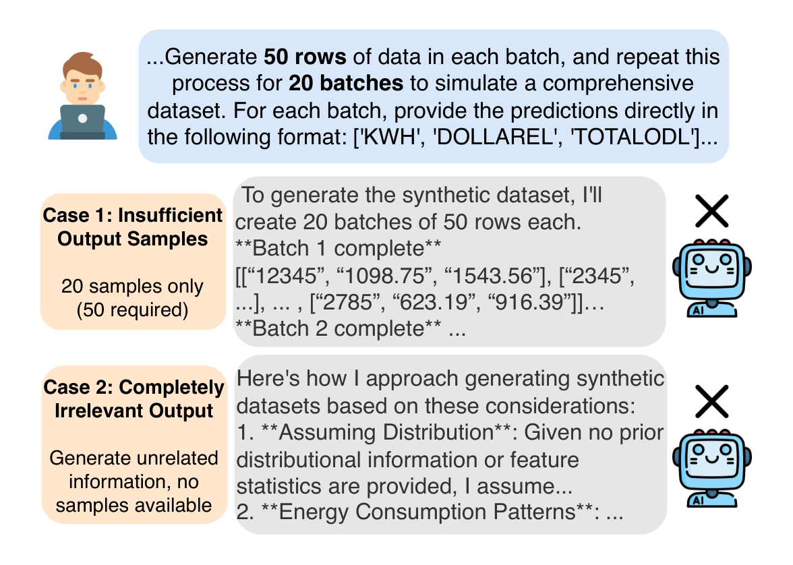
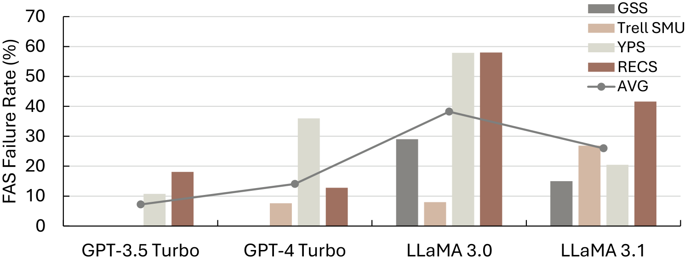
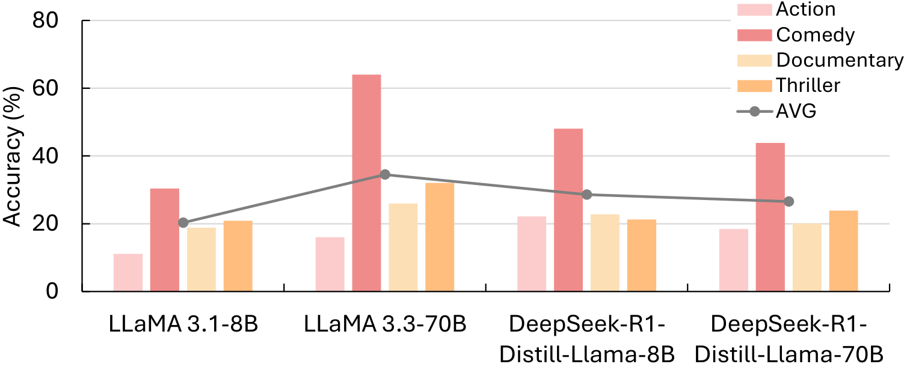
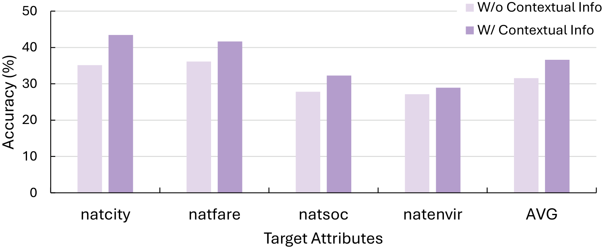
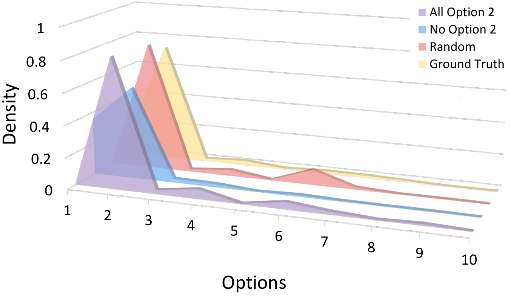

Overview
LLM-S3, pronounced LLM S Cube and written LLM-S3 in plain text, stands for Large Language Model-based Sociodemographic Survey Simulation.
Questionnaire-based surveys are foundational to social science research and public policymaking, yet traditional survey methods remain costly, time-consuming, and often limited in scale. Although prior work has explored large language models (LLMs) as virtual survey respondents, existing studies often address narrow task settings, focus on single sociological domains, or lack a unified evaluation framework that enables systematic comparison across diverse datasets and models.
To address these gaps, we introduce two complementary task abstractions: Partial Attribute Simulation (PAS), where LLMs predict missing attributes from incomplete respondent profiles, and Full Attribute Simulation (FAS), where LLMs generate complete synthetic datasets under zero-context and context-enhanced conditions. Both are framed as diagnostic and exploratory tools rather than replacements for human data collection. We curate LLM-S3 (Large Language Model-based Sociodemographic Survey Simulation), a benchmark spanning 11 real-world public datasets across four sociological domains, and evaluate GPT-3.5/4 Turbo and LLaMA 3.0/3.1-8B under zero-shot and few-shot settings. Our evaluation reveals consistent performance trends across model families, highlights failure modes in structured output generation, and demonstrates how context and prompt design affect simulation fidelity.

Datasets
We curate a cross-domain benchmark suite, LLM-S3, composed of eleven public datasets across four sociological areas: Social and Public Affairs, Work and Income, Household and Behavioral Patterns, and Health and Lifestyle. We note that the datasets used in this study are predominantly drawn from North American and European contexts, reflecting the current availability of large-scale public survey data. While this scope is a practical constraint of the present evaluation rather than a fundamental limitation of the PAS/FAS framework itself, the benchmark is designed to be extensible: as cross-cultural and multilingual survey datasets become available, the same evaluation protocol can be applied to assess LLM performance across diverse sociological contexts.
| Domain | Survey Name | Abbreviation | Year | Description | Number of Cases | Number of Attributes |
|---|---|---|---|---|---|---|
| Social and Public Affairs | American National Election Studies | ANES | 2020 | Individual’s views on certain social and political issues. | 3080 individuals | 470 |
| General Social Survey | GSS | 2022 | Individual's attitudes towards work and elections. | 4150 individuals | 1156 | |
| Basic Income Survey | BIS | 2016-2017 spring | A survey about Europeans' opinions toward basic income. | 9649 individuals | 15 | |
| Work and Income | Employee Survey | EmpS | — | Employee life experience and job satisfaction. | 3,025 | 23 |
| American Community Survey | ACS | Not specified | The ACS dataset offers a nuanced exploration of socioeconomic dynamics in the United States. | 2000 individuals | 13 | |
| Household and Behavioral Patterns | Residential Energy Consumption Survey | RECS | 2020 | Household survey, energy supplier data, and consumption/expenditure estimates. | 18496 households | 799 |
| National Household Travel Survey | NHTS | 2017 | Household’s mobility choices and daily travel behavior. | 923572 queries | 229 | |
| Trell Social Media Usage Data | Trell SMU | 2020 | Social media user's viewing/uploading/commenting habits towards a certain video website. | 488877 individuals | 26 | |
| Health and Lifestyle | Music & Mental Health Survey Results | MxMH | 2022 | Individual’s music preferences and mental health correlations. | 736 individuals | 33 |
| Young People Survey | YPS | 2013 | Individual’s preferences, habits, and personality traits. | 1011 individuals | 150 | |
| Mental Health Dataset | MHD | 2014-2016 | Survey results on music taste and self-reported mental health. | 292364 individuals | 17 |
Task Paradigms
Partial Attribute Simulation (PAS)
In numerous real-world survey scenarios, an organization already holds structured demographic records for a population of interest but lacks the specific attitudinal or behavioral measurements it needs. PAS is designed for precisely this setting: the available demographic attributes serve as the input profile, while the unmeasured attitudinal traits act as the prediction targets.
For example, a government labor agency might maintain administrative records for thousands of employees, including age, gender, job level, education, and employment type, yet lack survey data on job satisfaction, stress, or work-life balance. Conducting a full survey is costly and time-consuming; however, the agency still needs distributional estimates of these outcomes to inform workforce policy. Crucially, PAS does not require any individual-level response history and relies solely on the demographic data that the organization already possesses.
Let $\mathcal{D}=\{\mathbf{x}_1,\mathbf{x}_2,\ldots,\mathbf{x}_N\}$ denote a survey dataset of $N$ samples, where each $\mathbf{x}_i\in\mathbb{R}^M$ consists of $M$ attributes from the attribute set $\mathcal{A}$. Split $\mathcal{A}$ into an input set $\mathcal{A}_{\text{prior}}$ and a target set $\mathcal{A}_{\text{target}}=\mathcal{A}\setminus\mathcal{A}_{\text{prior}}$, then model: $$\mathbf{A}_{\text{target}} \sim P_{\theta}(\mathbf{A}_{\text{target}} \mid \mathbf{A}_{\text{prior}}).$$
Full Attribute Simulation (FAS)
While PAS assumes that individual demographic records are available, a different and more demanding scenario arises when an organization possesses only aggregate population statistics rather than individual-level data. This is the setting that FAS is designed to address: the LLM is given population-level priors and asked to generate a set of synthetic individuals whose joint attribute distribution approximates these priors.
Consider a market research firm that has access to published census summaries for a target region, such as the joint distribution of age, gender, and income brackets, but holds no individual survey records. The firm needs to generate a synthetic population of respondents whose collective attribute distribution matches the known aggregate statistics, so that downstream analyses such as consumer preference estimation or policy impact assessment can be conducted. Unlike PAS, which conditions on individual records and predicts missing attributes per person, FAS requires only aggregate statistics and generates an entirely synthetic population from scratch.
FAS selects two generation paradigms: $$ \begin{aligned} \mathbf{x} &\sim P_{\theta}(\mathbf{X}\mid \mathbf{C},\mathbf{S}) && \text{(zero-context)},\\ \mathbf{x} &\sim P_{\theta}(\mathbf{X}\mid \mathbf{C},\mathbf{S},P(\mathbf{A}_{\text{prior}})) && \text{(context-enhanced)}, \end{aligned} $$ Here, $\mathbf{C}$ denotes contextual metadata, $\mathbf{S}$ denotes schema constraints, and $P(\mathbf{A}_{\text{prior}})$ injects empirical priors to better align synthetic generations with real-world patterns.
Evaluation
PAS performance
| Dataset | Zero-Shot | Few-Shot | ||||||
|---|---|---|---|---|---|---|---|---|
| GPT-3.5 | GPT-4 | LLaMA 3.0 | LLaMA 3.1 | GPT-3.5 | GPT-4 | LLaMA 3.0 | LLaMA 3.1 | |
| ANES | 0.5735±0.0529 | 0.5576±0.0293 | 0.4875±0.0533 | 0.4768±0.0755 | 0.5568±0.0072 | 0.5459±0.0494 | 0.4646±0.0575 | 0.4683±0.0334 |
| GSS | 0.6983±0.0119 | 0.7082±0.0129 | 0.6990±0.0198 | 0.6818±0.0062 | 0.6766±0.0086 | 0.7054±0.0164 | 0.6878±0.0141 | 0.6801±0.0308 |
| BIS | 0.6204±0.0462 | 0.5119±0.0129 | 0.5777±0.0458 | 0.5730±0.0378 | 0.6207±0.0417 | 0.5299±0.0337 | 0.5640±0.0486 | 0.5622±0.0476 |
| RECS | 0.6554±0.0162 | 0.5648±0.0568 | 0.3114±0.0801 | 0.2669±0.0197 | 0.5293±0.1865 | 0.5489±0.0920 | 0.3088±0.0874 | 0.2365±0.0226 |
| ACS | 0.5159±0.1283 | 0.4722±0.1859 | 0.6056±0.0983 | 0.5766±0.1239 | 0.4791±0.1106 | 0.3636±0.0410 | 0.6055±0.1047 | 0.5969±0.1111 |
| Trell SMU | 0.3523±0.0340 | 0.4301±0.0033 | 0.5612±0.0003 | 0.5361±0.0064 | 0.4274±0.0499 | 0.5197±0.0670 | 0.5462±0.0189 | 0.4685±0.0147 |
| NHTS | 0.4009±0.0066 | 0.3125±0.0842 | 0.4927±0.1769 | 0.6079±0.1036 | 0.3568±0.0996 | 0.3103±0.1499 | 0.4908±0.1058 | 0.5798±0.0760 |
| Dataset | Zero-Shot | Few-Shot | ||||||
|---|---|---|---|---|---|---|---|---|
| GPT-3.5 | GPT-4 | LLaMA 3.0 | LLaMA 3.1 | GPT-3.5 | GPT-4 | LLaMA 3.0 | LLaMA 3.1 | |
| ANES | 0.7854±0.0598 | 0.8358±0.0324 | 0.7827±0.0487 | 0.7525±0.0372 | 0.7796±0.0447 | 0.8219±0.0395 | 0.7686±0.0382 | 0.7355±0.0491 |
| GSS | 0.5587±0.1358 | 0.6313±0.0340 | 0.5290±0.0583 | 0.4969±0.0326 | 0.4948±0.0430 | 0.6222±0.0348 | 0.4933±0.0895 | 0.4128±0.0777 |
| BIS | 0.1865±0.0032 | 0.2165±0.0022 | 0.2629±0.0600 | 0.2848±0.0217 | 0.1465±0.0164 | 0.2169±0.0045 | 0.2261±0.0233 | 0.2077±0.0044 |
| RECS | 0.6208±0.1116 | 0.8598±0.0793 | 0.7257±0.0144 | 0.6540±0.0730 | 0.6386±0.0257 | 0.9113±0.0165 | 0.7483±0.2132 | 0.6742±0.0623 |
| EmpS | 0.2192±0.0293 | 0.2171±0.0017 | 0.2302±0.0259 | 0.2188±0.0183 | 0.2267±0.0092 | 0.2116±0.0105 | 0.2147±0.0230 | 0.2143±0.0045 |
| NHTS | 0.7314±0.0077 | 0.7231±0.0003 | 0.5732±0.0126 | 0.6507±0.0453 | 0.7246±0.0322 | 0.7300±0.0057 | 0.6409±0.0797 | 0.5987±0.0270 |
| Trell SMU | 0.6415±0.0105 | 0.6525±0.0050 | 0.3865±0.0138 | 0.5028±0.0134 | 0.7228±0.0357 | 0.6601±0.0057 | 0.7099±0.0051 | 0.7309±0.0176 |
| MxMH | 0.1283±0.0380 | 0.1021±0.0018 | 0.0901±0.0129 | 0.0933±0.0151 | 0.1542±0.0517 | 0.0978±0.0093 | 0.0920±0.0103 | 0.0861±0.0120 |
| YPS | 0.2729±0.0074 | 0.2559±0.0038 | 0.3083±0.0478 | 0.2787±0.0426 | 0.2915±0.0283 | 0.2968±0.0471 | 0.2768±0.0175 | 0.1990±0.0418 |
| MHD | 0.3377±0.0058 | 0.3375±0.0045 | 0.3390±0.0068 | 0.3434±0.0070 | 0.3314±0.0198 | 0.3339±0.0079 | 0.3403±0.0094 | 0.3437±0.0063 |
To make the tabular comparison more visually salient, we provides a radar visualization of the same per-dataset PAS results (axis values normalized within each dataset):

FAS performance
| Dataset | Zero-Context | Context-Enhanced | ||||||
|---|---|---|---|---|---|---|---|---|
| GPT-3.5 | GPT-4 | LLaMA 3.0 | LLaMA 3.1 | GPT-3.5 | GPT-4 | LLaMA 3.0 | LLaMA 3.1 | |
| GSS | 0.6490 | 0.6490 | 0.6508 | 0.6520 | 0.6569 ↑1.22% | 0.6862 ↑5.73% | 0.6571 ↑0.98% | 0.6726 ↑3.16% |
| Trell SMU | 0.3170 | 0.3320 | 0.2353 | 0.2992 | 0.3410 ↑7.57% | 0.3617 ↑8.95% | 0.2557 ↑8.68% | 0.2792 ↓6.67% |
| YPS | 0.6674 | 0.7008 | 0.6567 | 0.6549 | 0.6764 ↑1.35% | 0.7210 ↑2.89% | 0.6569 ↑0.04% | 0.6539 ↓0.16% |
| RECS | 0.6334 | 0.6384 | 0.5597 | 0.3826 | 0.6092 ↓3.81% | 0.6403 ↑0.30% | 0.5883 ↑5.12% | 0.5529 ↑44.51% |
To make the tabular comparison more visually salient, we provides a radar visualization of the same per-dataset FAS results (axis values normalized within each dataset):

In-Depth Analysis
Attribute Predictability & Demographic Alignment in PAS
We conduct a subgroup-level analysis on the EmpS dataset (N=3,025) using LLaMA 3.1-8B in the zero-shot setting. All five target attributes are 5-choice questions, yielding a random baseline accuracy of 20%. JobSatisfaction (33.5%) consistently exceeds the baseline across all subgroups, while Stress (16.7%) falls below the baseline.

We further compares the ground-truth and LLM-predicted response distributions for JobSatisfaction and Stress. Although both attributes exhibit skewed empirical distributions, the model closely reproduces the right-skewed pattern of JobSatisfaction but fails to recover the strongly left-skewed distribution of Stress, indicating that the latter is much less aligned with the available demographic covariates.

Failure Modes in FAS
A major challenge in the FAS scenario is the occurrence of FAS failures, where a significant proportion of generated outputs do not meet our requirements, leading to a loss of usable samples. We identify two failure modes: Case 1: Insufficient Output Sample and Case 2: Completely Irrelevant Output. Experimental results reveal significant performance disparities: LLaMA variants exhibit 15–58% failure rates across all datasets. In contrast, GPT models maintain near-zero failure rates on simpler tasks (e.g., GSS and Trell SMU), but show moderate errors on more complex datasets.


Deployment Insights
Three practical optimization dimensions are examined: reasoning-oriented distillation, context-aware prompting, and few-shot example balance.



Key Takeaways
- LLMs exhibit reliable and consistent performance trends across various model families and task types.
- Prompt design and contextual augmentation significantly impact simulation fidelity, highlighting their crucial role.
- Failure cases in structured output generation remain a major bottleneck, particularly evident in the Full Attribute Simulation (FAS) scenario.
- We explicitly acknowledge that our evaluation measures statistical and distributional similarity, not behavioral fidelity, construct validity, or the nuanced reasoning of real human respondents.
Ethical Considerations
- Bias amplification. Our experiments demonstrate that LLMs can amplify existing biases present in training data, necessitating rigorous bias audits before deployment.
- Representation and generalizability. The datasets evaluated are predominantly drawn from North American and European contexts; the benchmark is designed to be extensible to cross-cultural and multilingual settings.
- Risk of misuse or misrepresentation. Without proper disclosure, LLM-generated responses could be mistaken for genuine human survey data; practitioners should explicitly disclose synthetic data usage and limitations.
- Transparency and reproducibility. Synthetic data generation processes should be transparent and reproducible; synthetic data should complement rather than replace genuine survey data.
Citation
@article{zhao2025large,
title={Large language models as virtual survey respondents: Evaluating sociodemographic response generation},
author={Zhao, Jianpeng and Yuan, Chenyu and Luo, Weiming and Xie, Haoling and Zhang, Guangwei and Quan, Steven Jige and Yuan, Zixuan and Wang, Pengyang and Zhang, Denghui},
journal={arXiv preprint arXiv:2509.06337},
year={2025}
}